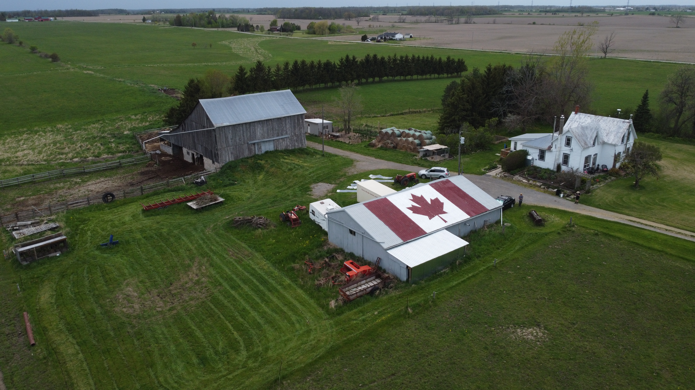

post vs pre image table
below is just a small example of how a simple ten minute photo edit can really five an image a new look
| Pre-processed |
post-processed |
|  |
 |
 |
 |
 |
 |
in a simple hue, sateration, vibrance and contrast alter the image can take on
warmer more detailed and higher quality image that looks like it was tacken with a
camera that cost way more than this $450 drone.
the software useed to edit the photos above is a free easy to use editing softwear called gimp
click her to download
for an in depth tutorial on how to affectivly use gimp click below